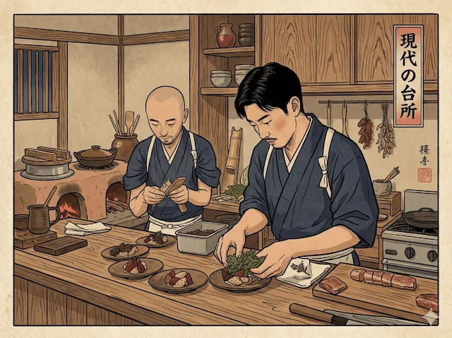
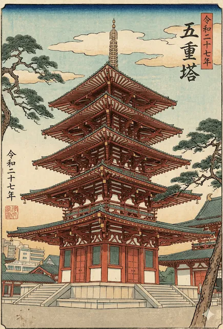
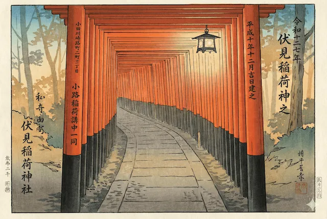

Kioto × Gemini Live 京都 × ジェミニ ライブ
Tres retos para poner a prueba tu fluidez con Gemini Live. Lee, escucha e identifica como un local.
01
Lee el menú en voz alta
Pídele a Gemini que traduzca y explique cada plato
Abre Gemini Live, muéstrale este menú y pídele que te lo lea y explique en español. ¿Cuántos platos puedes identificar correctamente?
湯豆腐 (yu-dōfu) — Tofu caliente en caldo dashi, plato icónico de la cocina kaiseki de Kioto.
鱧の天ぷら (hamo no tempura) — Anguila de mar rebozada, especialidad del verano en Kioto.
抹茶プリン (matcha purin) — Flan cremoso de té verde matcha, un postre moderno muy popular.
京野菜の炊き合わせ (kyōyasai no takiawase) — Verduras de Kioto cocinadas lentamente en caldo, plato de temporada.
鱧の天ぷら (hamo no tempura) — Anguila de mar rebozada, especialidad del verano en Kioto.
抹茶プリン (matcha purin) — Flan cremoso de té verde matcha, un postre moderno muy popular.
京野菜の炊き合わせ (kyōyasai no takiawase) — Verduras de Kioto cocinadas lentamente en caldo, plato de temporada.
02
Escucha el anuncio de la estación
¿Qué tren sale, a qué destino y en qué andén?
Reproduce el anuncio con Gemini Live activo. Pídele que te explique qué escucha. Luego verifica tu respuesta.

京都駅 · Andén 5
アナウンス中
まもなく、のぞみ２７号
新大阪行きが参ります
▶ PULSA PARA ESCUCHAR
まもなく、のぞみ二十七号、新大阪行きが、五番線に参ります。
Traducción: "En breve, el Nozomi número 27 con destino Shin-Osaka llegará al andén número cinco. Por favor, retírense de la línea amarilla."
🚄 Tren: Nozomi 27 | 🏁 Destino: Shin-Osaka | 🚉 Andén: 5
🚄 Tren: Nozomi 27 | 🏁 Destino: Shin-Osaka | 🚉 Andén: 5
03
Identifica los lugares de Kioto
Muéstrale cada imagen a Gemini Live y pregunta dónde es
Estas tres estampas ukiyo-e muestran lugares icónicos de Kioto. Selecciona una imagen para revelar su color y pídele a Gemini que identifique el lugar. ¡Pulsa de nuevo para deseleccionar!

嵐山竹林

五重塔

伏見稲荷
嵐山竹林の道 (Arashiyama Bamboo Grove) — El famoso camino entre cañas de bambú gigantes en Arashiyama, al oeste de Kioto. Sus sonidos fueron declarados patrimonio sonoro de Japón.
五重塔 (Gojū-no-tō) — Pagoda de cinco pisos, símbolo de la arquitectura budista japonesa. Esta estampa representa la pagoda de Tō-ji, el templo más alto de madera de Japón.
伏見稲荷大社 (Fushimi Inari Taisha) — El santuario shinto dedicado a Inari, dios del arroz. Sus miles de torii rojas en fila forman uno de los paisajes más fotográficos de Japón.
五重塔 (Gojū-no-tō) — Pagoda de cinco pisos, símbolo de la arquitectura budista japonesa. Esta estampa representa la pagoda de Tō-ji, el templo más alto de madera de Japón.
伏見稲荷大社 (Fushimi Inari Taisha) — El santuario shinto dedicado a Inari, dios del arroz. Sus miles de torii rojas en fila forman uno de los paisajes más fotográficos de Japón.